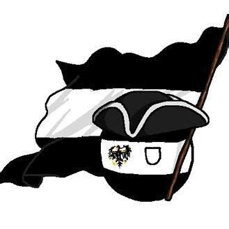
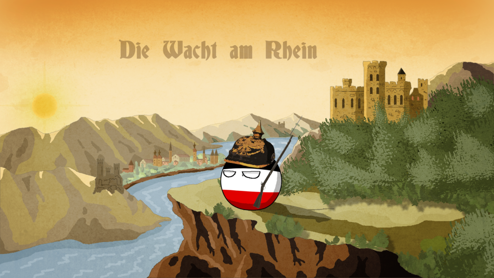
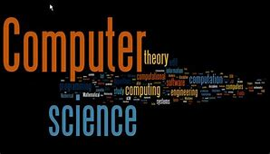
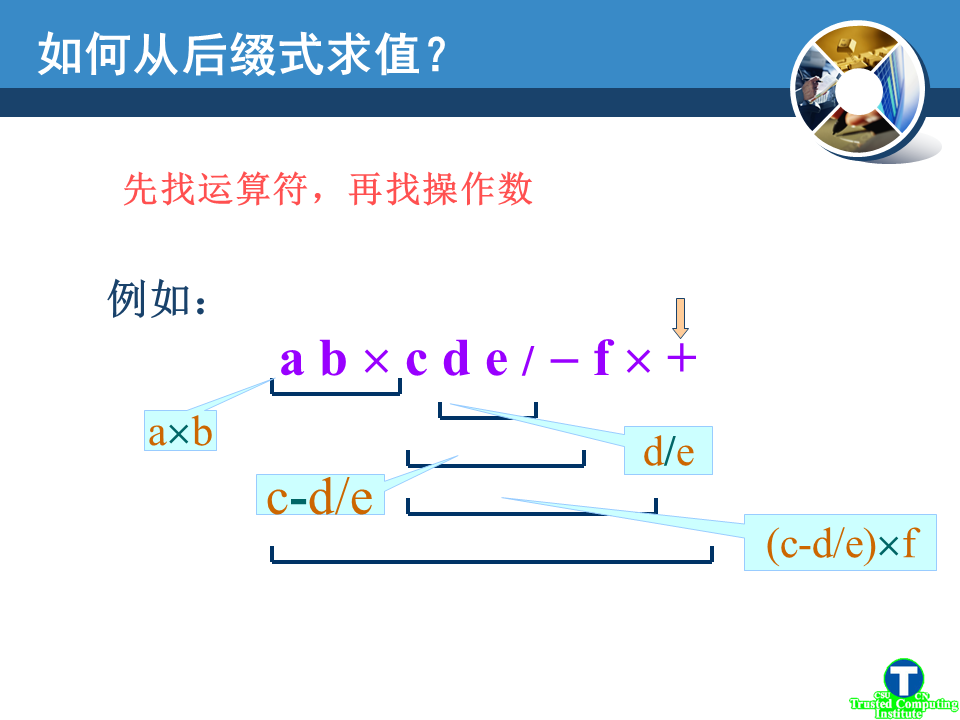

Guanlin Shen 沈冠霖
|  |
School of Software, Tsinghua University, Beijing 100084, China mail:shenguanlin1999@163.com WeChat:swadianknight1492 |
Academic Description
I am a junior of Software Engineering in Tsinghua University. My research field is 3D Reconstruction and 3D Computer Vision, and my tutor is Yebin Liu . I have learned a bit in the field of Texture Mapping, and I plan to further my reasearch in this field with Deep Learning techniques in the near future.
Background
- Middle School. Aug.2010~Jun.2017, Northeast Yucai School
- Bachelor of Engineering. Aug.2017~Now, School of Software, Tsinghua University
My Blogs

My Description as a polandball
Ich portrait meinself as Kingdom of Prussiaball, und mein Polenkugel Page ist above.
Das ist poor English seems like German, seen often in polandball memes.

Some suggestions written to Freshmen in Computer Science
In terms of programming, mathematics, English and other aspects,
I give some proposals to the freshmen in computer science for their summer vacations, who have passed the college entrance exam recently.

Report 2
It is a report of Problem 1(ddl) and 4(operator calculator) from homework 2.
My Description as a polandball
Ich portrait meinself as Kingdom of Prussiaball, und mein Polenkugel Page ist above. Das ist poor English seems like German, seen often in polandball memes.
Some suggestions written to Freshmen in Computer Science
In terms of programming, mathematics, English and other aspects, I give some proposals to the freshmen in computer science for their summer vacations, who have passed the college entrance exam recently.
Report 2
It is a report of Problem 1(ddl) and 4(operator calculator) from homework 2.